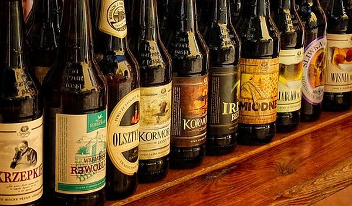

Browar Kormoran na chwilę obecną produkuje 21 piw w trzech liniach.
Podróże Kormorana (Weizenbock),
Regionalne z Warmii i Mazur (Warnijskie, Orkiszowe, Orkiszowe z Miodem, Orkiszowe z Czosnkiem, Świeże, Rześkie, Warmiak, Marcowe z Browaru Kormoran, Cerevisia Marcialis, Olsztyńskie, Podpiwek Warmiński)
Specjały Kormorana (Porter Warmiński, Wiśnia w Piwie, Jabłko w Piwie, Śliwka w Piwie, Miodne, Krzepkie, Kormoran, Kormoran Ciemny, Szoko, Irish Beer, Świąteczne)